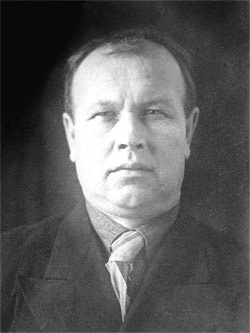

Георгий
Очень познавательная статья! Мне понравилось!
Добавить комментарий
Для отправки комментария вам необходимоавторизоваться.
СЕМЕН ИВАНОВИЧ СОТСКИЙ (1894 - 1950). О жизни и творчестве С.И. Сотского известно немного. Как-то получилось, что его современники музыканты М.Ф. Рожков и П.И. Нечепоренко с ним не встречались. М.Ф.Рожков общался с А. Токаревым, П.И. Нечепоренко с питерскими мастерами И.И. Галинисом, А.В. Кузнецовым. Известно, что в возрасте 13 лет Сотский переехал в Москву. С 1911 года работал по гардировке музыкальных инструментов, а с 18 лет начал самостоятельную работу. В 1924 г., будучи уже опытным мастером, участвовал в организации фабрики "Музтруд", в 1931 г. стал одним из основателей фабрики "Трудовая Коммуна", в 1935 перешел в артель "Прима", с 1938 г. работал в артели Промкооперации "Музрадиосоюз". На I Всесоюзном конкурсе музыкальных мастеров, мастерских и предприятий по конструированию домр и балалаек в 1938 г. С.И. Сотский получил за домру и балалайку две первые премии по 2500 рублей. Почерк Сотского виден, как говорится, невооружённым взглядом. Добротно изготовленные инструменты, всегда качественная сборка корпуса из хорошего волнистого клёна, и тогда на этикете написано "особый сорт". Либо из берёзы с крупной волной. Характерно заваленная "задинка" и поэтому короткие центральные клёпки. Сравнительно небольшой объём воздуха внутри корпуса, из-за этого инструменту часто недостаёт низких частот. Оригинальный лак обычно тёмно-красный. Хотя больше мы встречаем уже перелакированные с перетоньшёнными деками и корпусами инструменты. Этикет на бумаге красного цвета. На головке герб эмблема в виде сердца. И, самое главное, тембр "старого" Сотского - глубокий, по настоящему балалаечный, с хорошей педалью.
Семен Иванович Сотский — продолжатель дела своего отца И.Н.Сотского. Он родился в деревне Шихово Звенигородского уезда Московской губернии, славившейся своими мастерами деревянных музыкальных инструментов. В 13 лет переехал в МОскву, в 18 лет начал своё дело, его инструменты пользовались популярностью и узнаваемостью, в народе назывались «сотские». Он сделал множество инструментов, очень качественных, по форме балалайки напоминали налимовские, он является преемником лучших традиций С.И.Налимова. В советское время участвовал в организации фабрик по изготовлению музыкальных инструментов. Многие нынешние музыканты ищут сохранившиеся в частных коллекциях балалайки, сделанные рукой мастера С.И.Сотского.

Очень познавательная статья! Мне понравилось!
Добавить комментарий
Для отправки комментария вам необходимоавторизоваться.